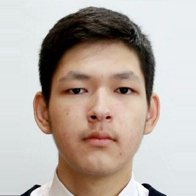

QYRAN 2.0
Голос в 3D-карту за секунду.
Локальная on-premise платформа, которая в реальном времени переводит радиоречь на казахском и русском в 3D-карту обстановки, маршруты реагирования OSRM и журнал аудита SHA-256.
Между рацией и картой стоит человек.
При одновременном пожаре, дроне и аварии на подстанции диспетчер 112/МЧС вручную слушает эфир, записывает на бумагу, ищет квадрат на карте и передает расчетам. На один доклад уходит около 2 минут.
Параллельных докладов
Карта отстает от реальности в первые критические минуты ЧС, часть деталей теряется.
Регионов РК и мегаполисы
ЦОУ-112, ДЧС/МЧС, акиматы, ТЭЦ, нефтегаз, аэропорты и крупные выставочные объекты.
Зарубежных систем под KK-эфир
Иностранные ГИС требуют облако, ручной ввод мышью и не работают с казахским радиоэфиром.
Не макет. Full-Stack локальный MVP.
Подключается поверх существующих раций (через RoIP-шлюз) без замены парка связи. Полностью работает локально на ноутбуке даже без доступа в интернет.
Эфир и PTT
Микрофон, загрузка WAV/MP3, радиофильтр 300-3400 Гц, расчет SNR и стресс-тест x5.
3D-карта и OSRM
3D-здания Астаны и Алматы (32 ориентира), автоматический подбор ближайшего расчета и ETA.
3D-здание и CV
Поэтажная схема (Павильон C2), 4 камеры/тепловизора и локальный анализатор кадров.
Стандарты
Сводка по базе со ссылками на ID, экспорт TAK/CoT 2.0 XML, GeoJSON, PDF-отчет и SHA-256.
Замеры на GPU: WER -89.0%.
Наш пайплайн решает две практические проблемы Whisper на узкополосной рации: галлюцинации в шуме и искажения казахско-русских терминов и позывных.
Снижение WER
Астана EXPO: 28.2% -> 3.1%
Алматы (10 клипов): 28.7% -> 3.9%
Быстрее реального времени
Локальный Whisper Large v3 Turbo на RTX 4050 (fp16), загрузка 1.3 с.
Авто-язык KK / RU
Без ручного переключения на 18 реальных радиозаписях kk/ru.
Срывов перехвачено
Остановка «Продолжение следует...» и восстановление казахского доклада рескорингом.
дұром -> дрон · дом на крыше -> дым на крыше · мүрт оқшауыланды -> өрт оқшауланды · адамыз ардап шекті -> адам зардап шекті · қосшаңыз -> қоршаңыз
Соответствие Закону РК № 230-VIII.
Закон вступил в силу 18 января 2026 года. QYRAN изначально спроектирован как система высокого риска с контролем человека и защитой данных.
Строгий Human-in-the-Loop (ст. 17-19)
Автоматическое выполнение критических действий P1/P2 заблокировано. Оператор утверждает или отклоняет каждую рекомендацию.
Двойная маркировка (ст. 21)
Пометка AI-ASSISTED в интерфейсе и машиночитаемый JSON-LD паспорт с SHA-256 во всех отчетах, GeoJSON и CoT XML.
Криптографический аудит (SHA-256)
Связанная хеш-цепь в SQLite с проверкой целостности и тестом обнаружения подмены записей.
Локальный контур и ПДн (Закон № 94-V)
0 облачных AI-вызовов. Автоматическое маскирование ИИН, телефонов +7 7XX, госномеров и ФИО при экспорте.
Пилот -> Лицензия -> Масштаб.
| Критерий | Диспетчер + бумага | Обычная ГИС / ATAK | QYRAN 2.0 |
|---|---|---|---|
| Ввод на карту | Вручную (~2 мин/доклад) | Мышью / со смартфона | Голосом из рации (< 1 с) |
| Казахский радиоэфир | Слушает человек | Нет | KK + RU (WER -89%) |
| Закон РК № 230-VIII | Нет | Нет | HITL + ст. 21 + SHA-256 |
| Развертывание | Офлайн | Облако / чужой вендор | 100% On-Premise РК |
01 · Пилот (1-2 мес)
1 объект (ДЧС / ТЭЦ / EXPO). Замер точности на реальном эфире и сбор RoIP-шлюза в Almaty FabLab.
02 · B2G / B2B Подписка
4.5 млн тг / объект в год (~$9K ARR). 10 объектов = 45 млн тг ARR. Окупаемость менее 3 мес.
03 · Интеграция
RoIP-шлюз к действующим рациям (Motorola/Hytera) и коннекторы TAK/CoT, 112 и Telegram.
Собрали своими руками.
MVP работает вживую.
Ералы Абуталифулы
ML Engineer · Backend · Lead
Архитектура ASR/NLP, локальный Whisper + mDeBERTa, FastAPI и автоматизация (призер OneIdea Championship 2026, Efes Kazakhstan).
Аделия Аджибаева
ML Engineer · Backend · Data Viz
Разработка ML-моделей, серверной логики, пространственной аналитики и 3D-визуализации оперативной обстановки.

Нұржан Әбдік
Software Engineer · Product & QA
Интеграция интерфейса оператора, тестирование сценариев ЧС, проработка пилотного внедрения и защита продукта.
Живая демонстрация на сцене
Продиктуем реальный доклад в микрофон на казахском или русском, утвердим HITL, запустим маршрут OSRM по Астане и проверим SHA-256 аудит.
Спасибо! Вопросы жюри?
Готовы протестировать QYRAN на вашем живом голосе прямо сейчас (казахский или русский).
Локальный Whisper
RTX 4050 · whisper-large-v3-turbo (fp16)
SHA-256 Аудит-цепь
SQLite WAL · Закон РК № 230-VIII
Облачных вызовов
github.com/overloooooord/qyran